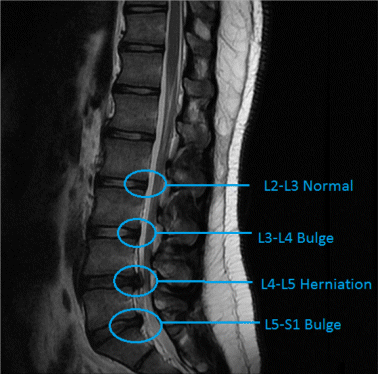

Danish Ansari
AI Scientist
Bengaluru, Karnataka, India

Profile
I am passionate about computer programming, having keen interest in computer vision specially. I am well experienced in both ceonventional and advanced deep learning techniques. I enjoy working and learning computer vision to solve challenging problems which in ways improves lives.
Education
West Bengal University Of Technology - Kolkata, India
B.Tech, Information Technology — 7.9 GPA
Batch 2010 - 2014
T.Model Inter School - Gaya, India
Intermediate of Science — 71% (PCM)
Batch 2007 - 2009
Skills
Computer Vision
Well experienced with conventional and deep learninig techniques to computer vision.
Python
Profient in python, also know c, C++. Have worked with Pytorch, Keras, Yolo and other deep learning frameworks.
Project Direction
Proven ability to lead and manage a wide variety of design and development of vision projects in team and independent situations.
Experience
Stats Perform
AI Scientist
2021-current
Working on game domain to get in insights of a match using CNN. Worked on soccer games for players team clustering and tracking. Leading a small team of smart people working on computer vision.
Synapsica Technologies
AI Scientist
2019-2021
Worked on Xray and MRI Images to get underlying features using CNN to detect anamolies in spine.
Graymatics
AI Engineer
2018-2019
Developed Automatics Number Plate Recognition System. Combining CNN with RNN made it possible to get best results on OCR.
Vehant Technologies
Software Development Engineer
2014-20018
Started working on software development and then moved to computer vision. Got the opportunity to explore and exprement deep learning concepts.
Projects
Player Tracking - Soccer
This is one of the most challenging tasks in computer vision I came across. In most games players wear very similar jerseys. And in games like soccer or basketball, it is really difficult to track a player of interest. I looked into many solutions that exist and understood it’s ideas, most of which are for crowd human tracking or vehicle tracking. And I am working on deriving appearance based embedding learning to differentiate between players.

Player Reid (clustering) - Soccer
Player reid is yet another challenging task, where we want to cluster players from different teams and responsibility into separate categories. I explored different approaches and came to a conclusion that similarity matching can be a good strategy as players from one team appear similar. I used CNN and Triplet loss to make the model learn to detect players from the same teams and then used a clustering algorithm to group them.
Spindle X
Working with Xray images comes with an inbuilt challenge of data variation due to no standard rule to take pictures. With huge augmentation we wanted to detect each corner point in the spinal intervertebral discs. Because these fine points can be used to further measurements and make the diagnosis faster and better.
Spindle MRI
Worked on detecting disease at disk level in an MRI Image. So it was a multi-label multi-class problem. Used CNN to get underlying features to create a one vs all classifier. Detection of such disease needs very fine grained features, as it can be a difficult task even for human expertise.
ANPR (automaic number plate recognition)
Automatic Number Plate Recognition is one interesting challenge which can have many uses and at a large scale. Detection of the correct licence plate can be used for surveillance as well monitoring any potential traffic violations. Combining CNN and RNN to form RCNN was the key ingredient. Each row of the plate was passed a sequence and it was able to predict what the potential characters could be even if the characters are not fully visible.
Helmet Violation Detection
Convolutional Detection methods like YOLO, SSD come with computation cost. So I Converted this problem into classification. I used license plates position to estimate potential head location and did a three classification as if both rider and pillion is wearing a helmet or not or if the image is junk since we don’t want to make false predictions for people who are actually following traffic rules. Having this in mind I was able to get about 98% recall.

Vehicle Classification
Experimented many architechture and losses to fit the problem and challenges like data imbalances. Optimized models to run on CPU

Vehicle Detection
Experimented with different detection techniques - Two Stage(RCNN) and Single shot(YOLO, SSD), got resonable map on detecions of different vehicles.
Traffic Enforcement System
Worked on backend of the application to detect violations such as Red light violation, wrong way violation, speed violations etc.
MOOCs
Stanford University CS231n, Spring 2017
Got a great undesrtadnding about convulational neural networks and how they are used to extract features from images. Understaood different neural architechtures and how they can be combined to solve problems.
Coursera - Machine Learning
Got to learn the fundamentals of Machine learning and algorithms, neural nets and its applications on real world problems.